Poly Haven 素材
键盘准备好了，键帽高度和配色也定了，摄像机取景也不错，但灯光和地面就是达不到想要的效果。
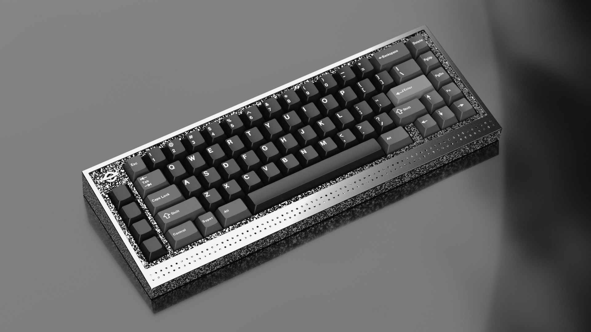
KRK 预置了多种地面和灯光方案供你起步，不过你可能想换别的地面和灯光，让画面更丰富。Poly Haven 是个很好的资源站，既有用来承载键盘的表面，也有用来照亮场景的 HDRI（高动态范围图像）。下面走一遍导入流程。
如果你已经装了 Poly Haven 插件，这套流程大部分都能跳过；如果你经常这么干，我强烈推荐装一个。
地面
先访问 Poly Haven 网站（polyhaven.com），点击顶部栏的 Assets > Textures。
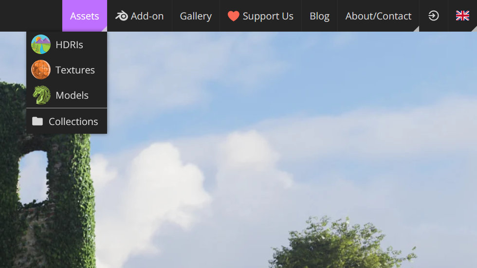
里面有多个分类，这里点 Floor > Indoor > Man-Made，然后选 Slab Tiles。
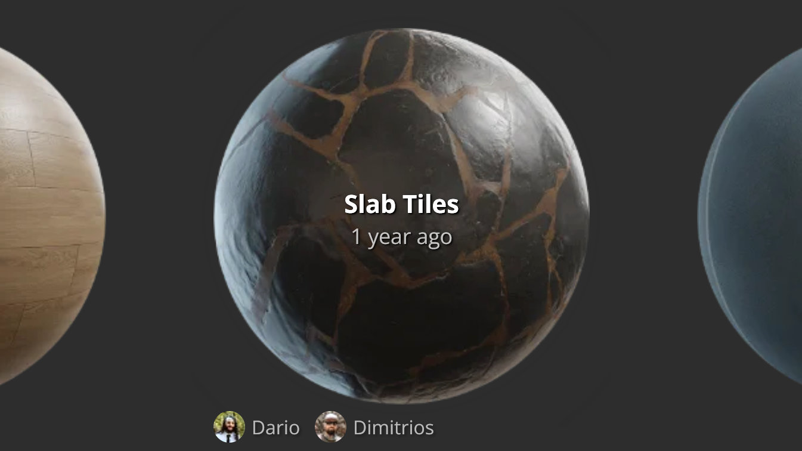
点下载按钮，等 zip 下完，把它解压到对应文件夹。你会看到文件夹里有一个 blend 文件，说明里面已经有一个配置好、可以直接用的物体。
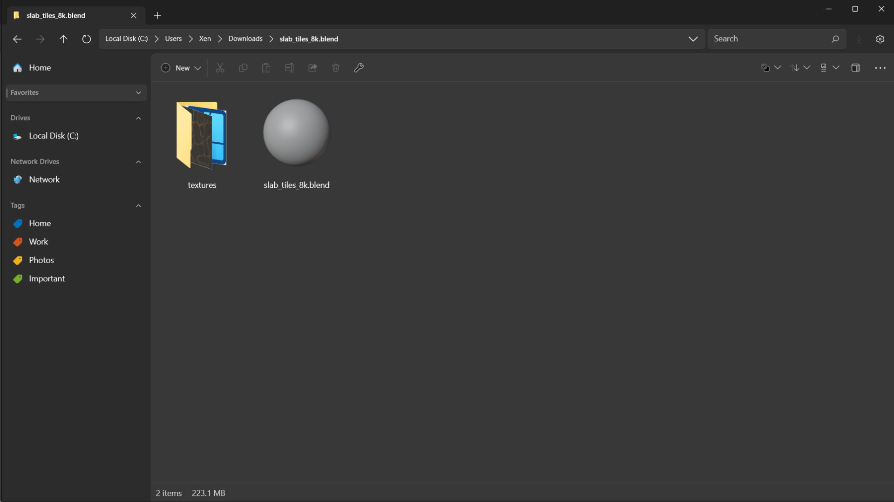
要导入 blend 文件的内容，得用 Append 或 Link。这里选择 append 地面，并且不与原文件保持链接。在 Blender 里点击 File > Append，开始导入 Poly Haven 地面，接着选择 Object 子分类，找到地面物体，它很可能叫 “Plane”。
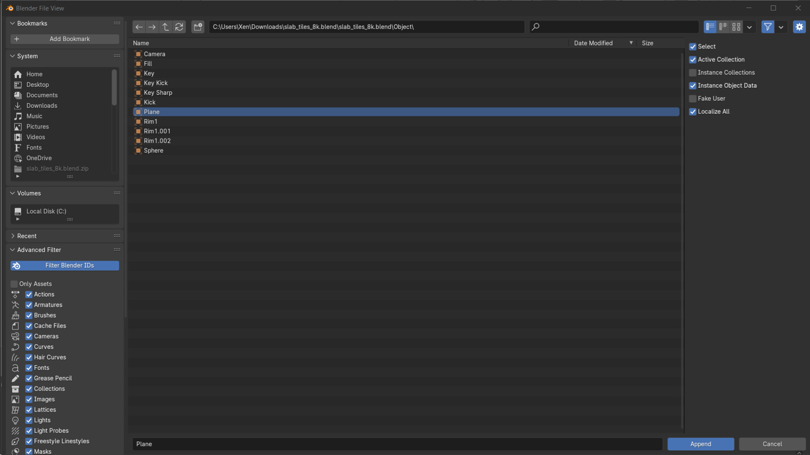
它会被追加到大纲视图里当前激活的集合中。地面进场景之后，就可以动手调整了。
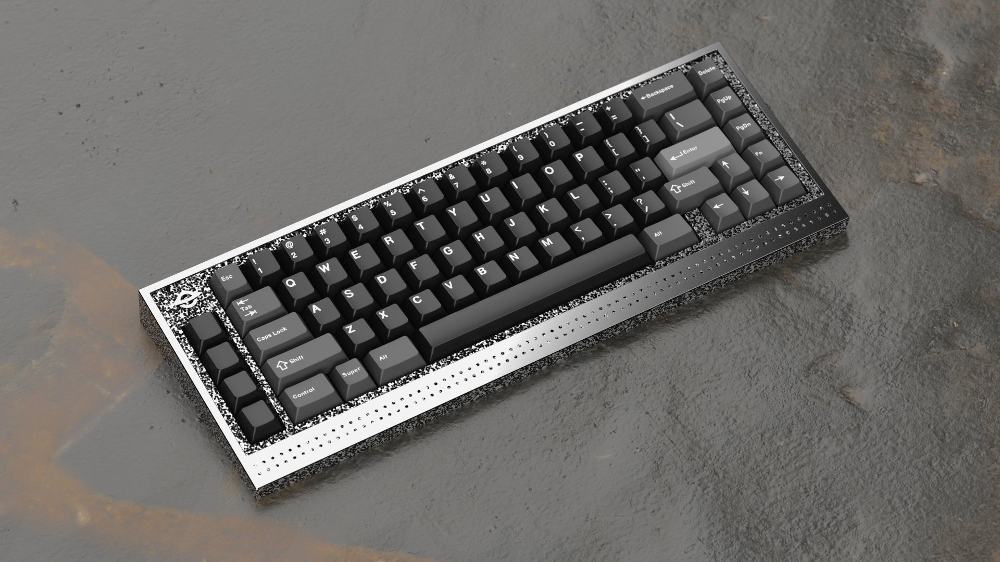
默认的几何体太少，置换（displacement）推不出细节，而且贴图比例在这个场景里偏大。接一个 Value 节点到比例（scale）上设为 2，把比例放大一倍。按我的机位角度，我还用映射节点把贴图移了 80mm。再到修改器标签页里把细分修改器级别改成 10，让几何体足够密，撑得起置换图像的细节。
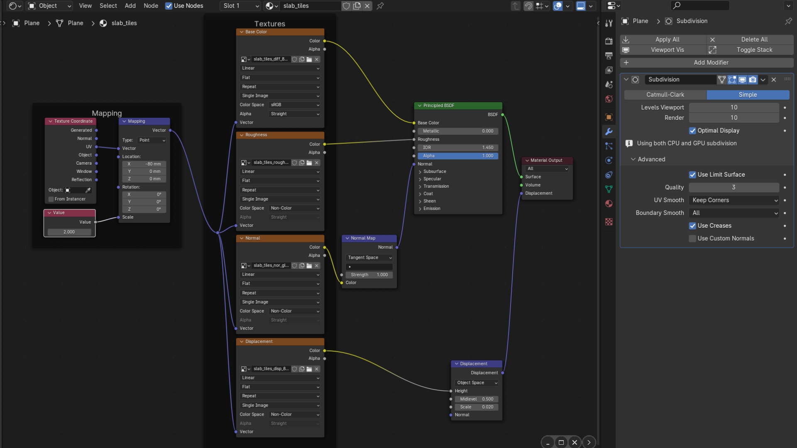
既然用了置换，把地面往下移一点也很有必要：这一个往下移了 7mm。地面现在可以用于渲染了。
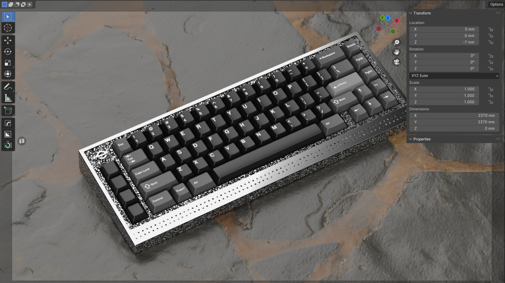
环境
记住：HDRI 能提升真实感，但也会影响颜色。拍键盘和场景没问题，但对颜色准确性要求很高的套件渲染就不合适了。要加 HDRI，到 Poly Haven 点 Assets > HDRIs，挑一个下载。这里用 Leadenhall Market，下载下来是 EXR 图像文件。
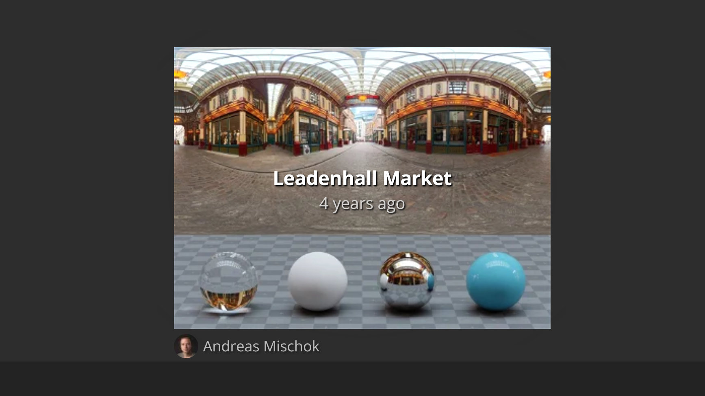
在大纲视图里停用 Lights 集合。
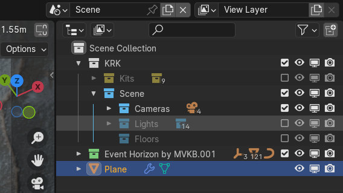
然后在材质编辑器里点左上角的下拉菜单，从 Object 切到 World。世界材质已经搭好了：选中图像节点按 M 取消静音，再点 Open 载入 Leadenhall Market 图像。
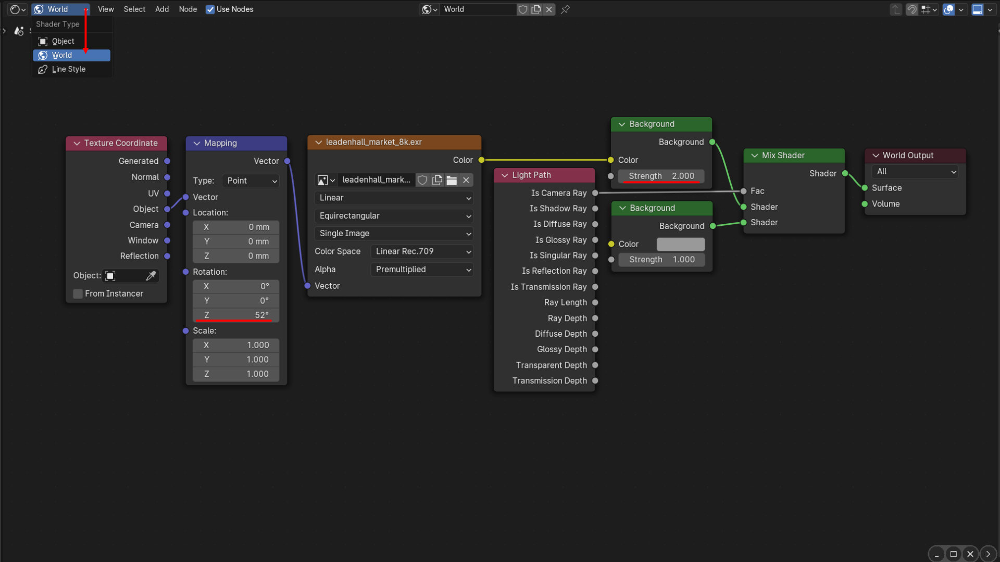
想调整这张图，可以新建 Mapping 节点和 Texture Coordinate 节点，按图里那样连接。这里我把图像转了 52 度，让键盘右侧边缘出现一道好看的高光，同时把 HDRI 强度提高一倍。
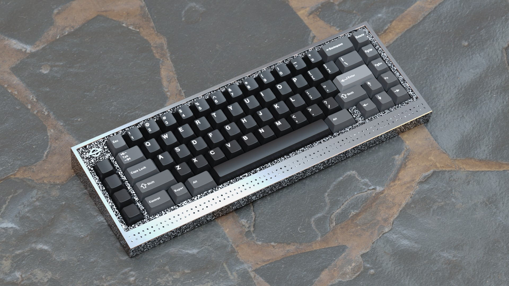